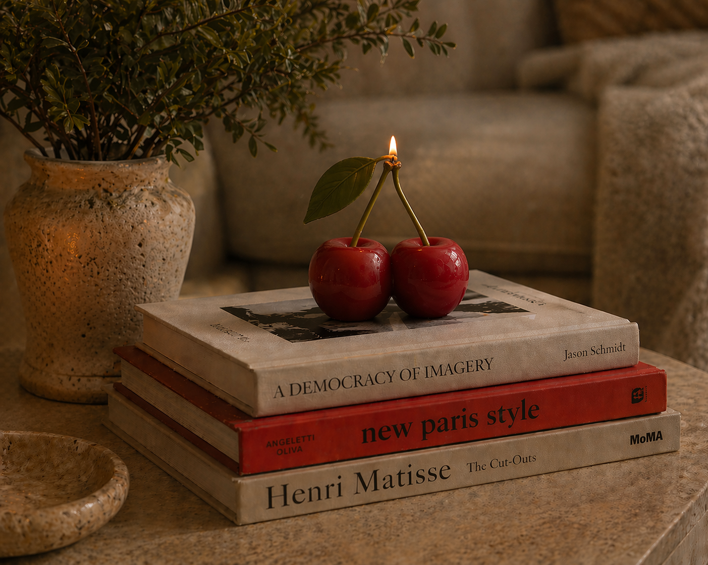
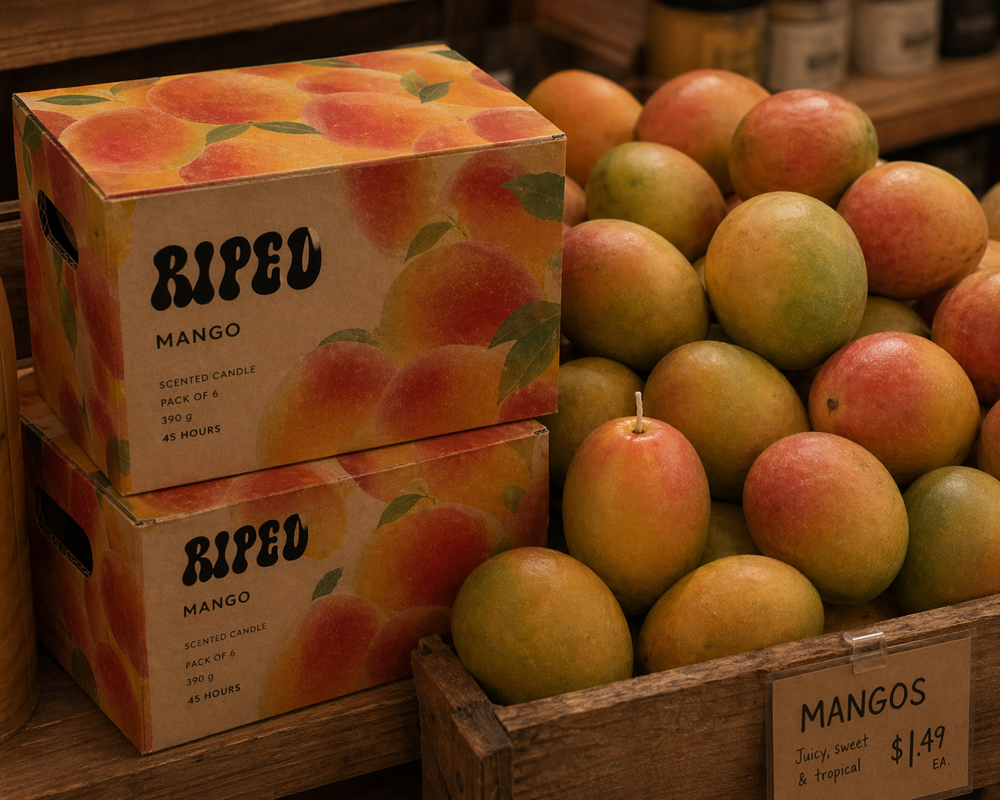
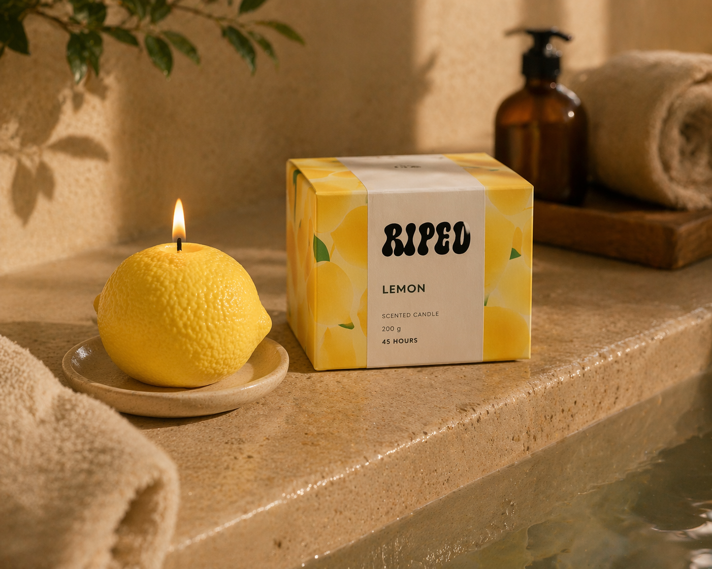
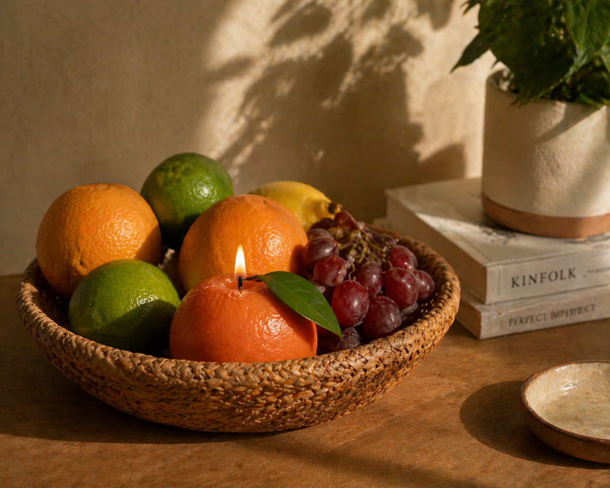
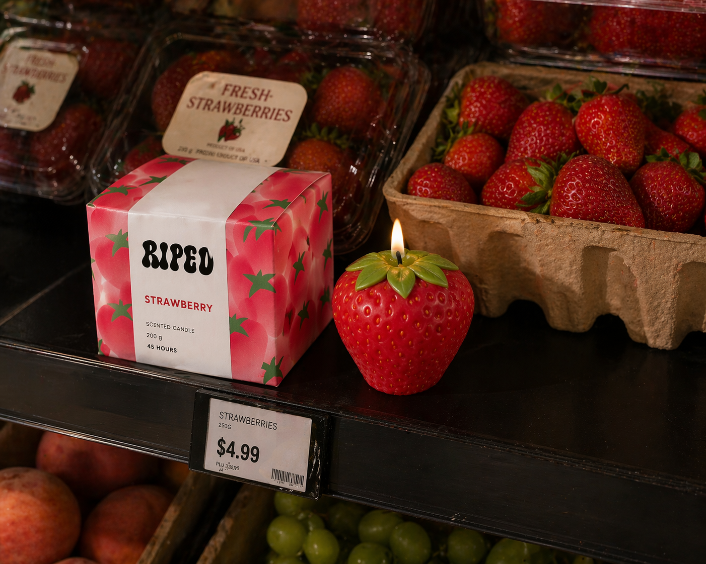

Less picture, same feeling. A tool that prints what is left of a photograph as a poster.
Rules I wrote, surprises I didn’t plan. You steer a living particle field.
A logo that is always evolving: it moves with the clock and changes colour with the day.
I collected 150 grids and let their shared meanings draw the map.
A shopping trip where American brands push you away, and the emptying shelves tell the story.





A candle line you can almost taste: packaging, social and launch, all at peak ripeness.
Does pole position win the race? Seven F1 seasons as map layers.
A documentary of the 3 AM thoughts that feel most like home.